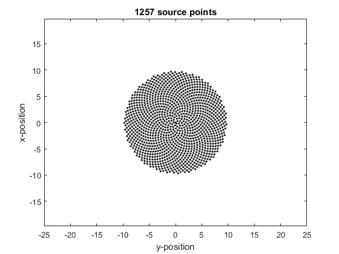

makeCartDisc
Create evenly distributed Cartesian points covering a disc.
Syntax
[points, scale] = makeCartDisc(kgrid, centre, radius)
[points, scale] = makeCartDisc(kgrid, centre, radius, orientation)
Description
makeCartDisc creates a num_dims x num_points array of the Cartesian coordinates of points evenly disributed over a disc.
Examples
Nx = 30;
Ny = 50;
dx = 1;
dy = dx;
kgrid = kWaveGrid(Nx, dx, Ny, dy);
centre = [0, 0];
radius = 10;
points = makeCartDisc(kgrid, centre, radius);
num_points = size(points, 2);
figure
plot(points(2,:), points(1,:), 'k.')
axis(0.5*[kgrid.y_size .* [-1, 1], kgrid.x_size .* [-1, 1]])
axis equal
xlabel('y-position')
ylabel('x-position')
title(sprintf('%d source points', num_points))

Inputs
kgrid |
the kgrid object on which the simulation will take place |
centre |
centre of the disc given as a row vector [m] |
radius |
radius of the disc [m] |
Optional Inputs
center_pos |
[x, y, z] position of the circle center [m] (default = [0, 0, 0]) |
orientation |
orientation of the disc given as a row vector [m] |
Outputs
points |
num_dims x num_points array of Cartesian coordinates |
scale |
scaling factor relating the density of Cartesian points to the density of kgrid nodes |
See Also
offGridDisc